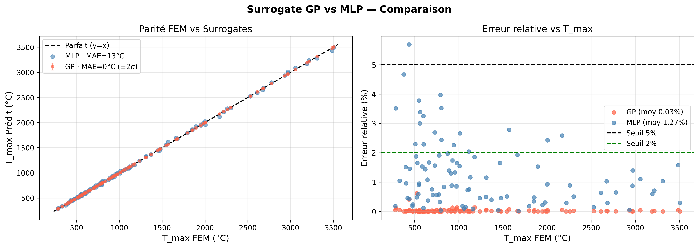

// Simulation · Applied AI · Aerospace
TPS Thermal
Surrogate
FEM→ML pipeline that replaces an expensive COMSOL solver with a Gaussian Process surrogate for aerospace reentry thermal protection systems.
0.03%
GP error vs FEM
100k×
Speedup vs COMSOL
0.9999
R² GP surrogate
500
FEM simulations

GP (MAE ≈ 0°C) vs MLP (MAE = 13°C) — 100 test points, relative error as a function of T_max
COMSOL
Python
Gaussian Process
PyTorch / MLP
FDM / FEM
Streamlit
NumPy / scikit-learn